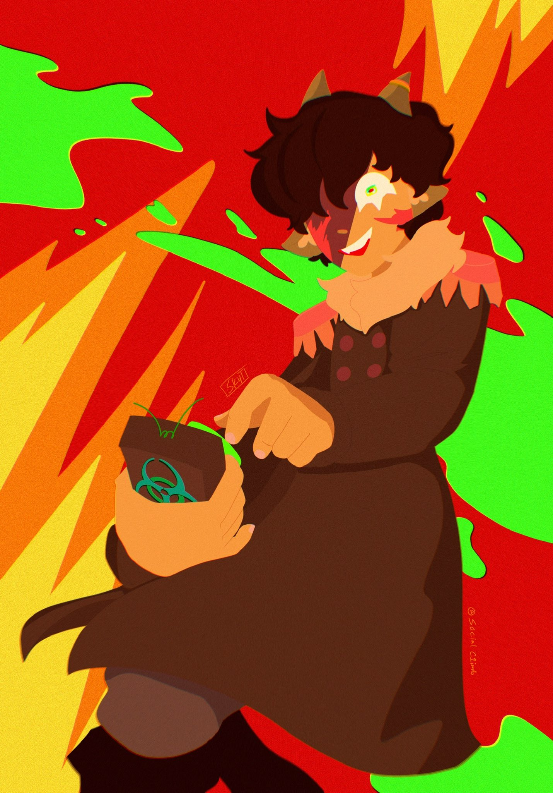
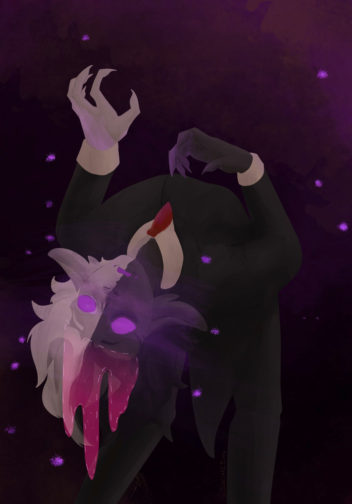
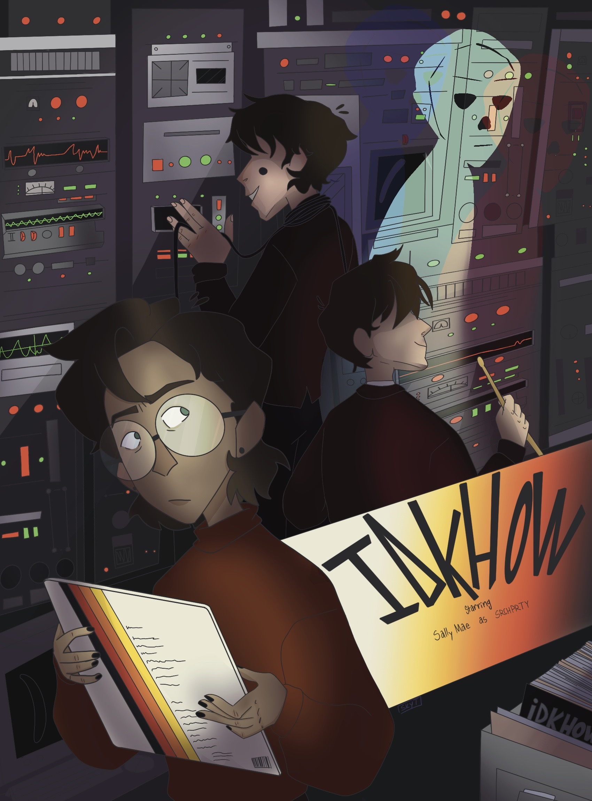
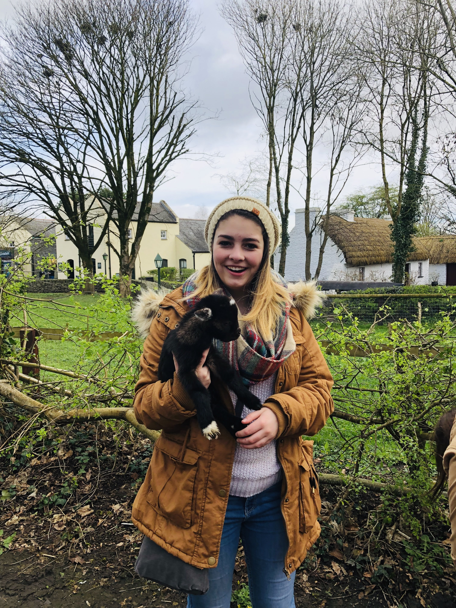

Singing and Music
I have been singing for as long as I can remember, and although I don't take lessons or perform (often)
anymore, I don't plan on stopping! I sing mainly, but I also play a handful of instruments,
such as guitar, bass, piano, and drums. I was a part of the School of Rock - Plano performance group for quite a few
years and was even in my own band with a couple of friends (and I aam thinking about starting another). I actually have
one song released on streaming platforms too, under the name of "Sky Toups"!
Back to Top
Art
As well being a musician, I actually really enjoy drawing and doing art of my favorite books, movies, podcasts, or other forms of media. As nerdy as it is, I really love writing comics and doing horror art pieces! A lot of my recent art from this year can be found on my twitter! Some of my favorite pieces I've done recently can be seen below.
  Back to Top
Aviation
One other thing I enjoy (and hope to do more in the future) is flying aircrafts and learning
about them! My end goal for a career is that I can become a pilot for an airline such as Southwest Airlines. although
I haven't currently started lessons, I have done test flights and love flying, so I hope to
be able to start soon!
Back to Top
Traveling
On the same topic of aviation, I love to travel! My love of traveling is actually what inspired me to look into aviation as a future career. The coolest place I have been to, hands down, is Ireland! I traveled throughout the entire country and got to sing in multiple cathedrals and chapels. I even got to meet the mayor of Dublin and perform for him and his peers.

Back to Top